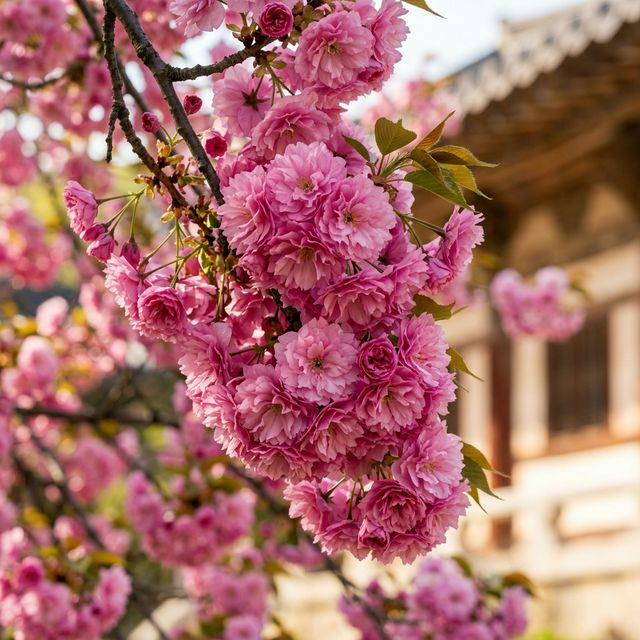
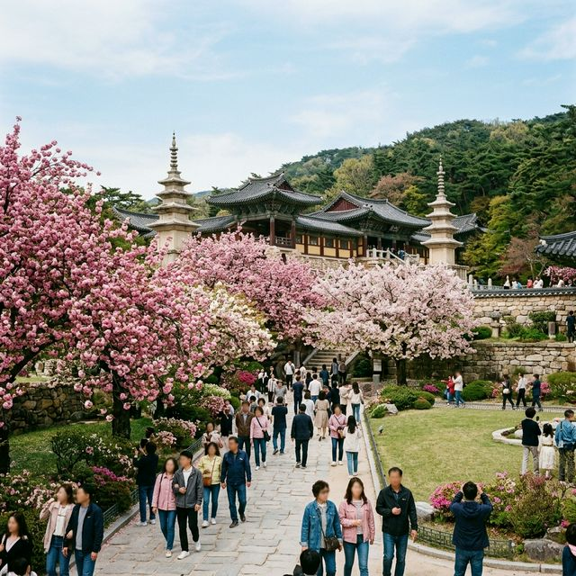
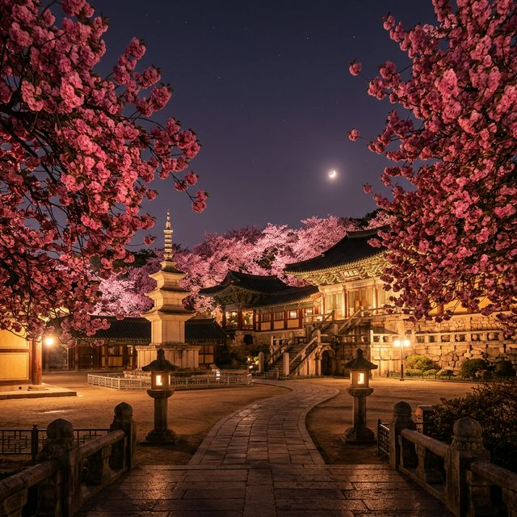

경주 불국사 겹벚꽃 완벽 가이드 — 분홍빛 솜사탕 터지기 직전, 4월 중순 개화 정보
🌸 제2의 봄: 경주의 왕벚꽃이 엔딩을 고할 때, 불국사에는 진분홍빛 겹벚꽃이 비로소 만개하며 경주의 두 번째 봄을 알립니다.
📍 핵심 스팟: 불국사 본당 내부가 아닌, 정문 주차장에서 불국사로 오르는 야산 산책로 일대가 겹벚꽃의 최대 군락지입니다.
✅ 실시간 현황: 2026년 4월 12일 기준, 꽃망울이 터지기 시작했으며 이번 주말(4월 18~19일)이 절정을 이룰 것으로 예상됩니다.
벚꽃이 지는 것을 아쉬워할 필요는 없습니다. 천년 고도 경주에는 우리를 기다리는 또 하나의 선물, 겹벚꽃이 있기 때문입니다. 일반 벚꽃보다 2주 정도 늦게 피면서 꽃송이가
마치 장미처럼 여러 겹으로 뭉쳐져 있는 겹벚꽃은 '왕겹벚꽃'이라고도 불리는데요. 그중에서도 경주 불국사의 겹벚꽃은 전국에서 가장 압도적인 규모와 화려함을 자랑합니다.
분홍빛 소금사탕이 나무 위에 내려앉은 듯한 비현실적인 풍경, 2026년 불국사 겹벚꽃 여행을 위한 모든 정보를 정리해 드립니다.

겹겹이 포개진 꽃잎이 마치 미니 장미처럼 풍성한 불국사의 겹벚꽃. (AI 제작 이미지)
1. 불국사 겹벚꽃, 어디에서 봐야 할까?
초행길인 분들이 가장 많이 실수하는 것이 불국사 매표소 안으로 들어가는 것입니다. 물론 사찰 내부도 아름답지만, 우리가 흔히 보는 겹벚꽃 군락지는 불국사 공영주차장(불국사 정문
쪽)에서 사찰로 올라가는 경사진 잔디밭 언덕길에 형성되어 있습니다. 수백 그루의 겹벚꽃 나무가 비탈길을 따라 터널을 이루고 있어, 굳이 입장료를 내지 않고도 충분히 만개한 꽃의
향연을 즐길 수 있습니다. 돗자리를 펴고 피크닉을 즐기는 분들이 가장 많은 곳도 바로 이 구역입니다.
2. 2026년 겹벚꽃 개화 및 만기 시기 예보
2026년 경주의 4월은 유난히 따뜻하여 개화가 조금 앞당겨질 것으로 보입니다. 현재 4월 12일 기준으로 전체적인 개화율은 약 20% 내외이며, 꽃망울이 이제 막 벌어지기 시작했습니다. 다가오는
4월 15일부터 본격적으로 만개하여, 4월 18일(토)과 19일(일)에는 사방이 분홍색으로 덮이는 최절정을 맞이할 것으로 보입니다. 겹벚꽃은 일반 벚꽃보다 꽃잎이 두꺼워
바람에 쉽게 떨어지지 않으므로, 4월 말까지도 충분히 감상할 수 있는 것이 장점입니다.
📸 인생샷을 위한 불국사 포토 포인트
1
잔디밭 낮은 구도: 겹벚꽃은 가지가 아래로 길게 늘어지는 특징이 있습니다. 잔디밭에 앉아 늘어진 가지를 배경으로 담아보세요.
2
석축과 벚꽃: 경주 특유의 낮은 돌담이나 석국을 프레임 하단에 걸치면 천년 고도의 분위기가 물씬 느껴집니다.
3
밤의 여왕: 조명이 켜지는 야간에는 겹벚꽃의 진분홍색이 더욱 선명하게 살아나 신비스러운 분위기를 자아냅니다.

너른 잔디밭 위로 분홍빛 안개가 내려앉은 듯한 불국사 겹벚꽃 단지 풍경. (AI 제작 이미지)
3. 불국사 겹벚꽃 여행객을 위한 실전 팁
겹벚꽃 시즌의 불국사 주차장은 오전 9시만 되어도 만차 상태가 되곤 합니다. 이를 대비한 몇 가지 팁을 정리했습니다.
- 주차 전략: 불국사 공용 주차장이 만차라면 조금 떨어진 진현동 공영주차장이나 인근 식당가 유료 주차장을 이용하는 것이 정신 건강에
이롭습니다.
- 피크닉 준비: 겹벚꽃 언덕은 경사가 있지만 돗자리를 펴기 좋습니다. 간단한 간식과 음료를 준비해 '꽃크닉'을 즐겨보세요. (단, 취사 및 쓰레기 투기는 절대
금지입니다.)
- 드레스코드: 분홍색 배경과 대비되는 화이트나 연한 크림색 계열의 옷을 입으면 훨씬 선명하고 화사한 사진을 얻을 수 있습니다.
| 구분 |
상세 내용 |
비고 |
| 입장료 |
무료 (단지 구역) / 6,000원 (사찰 내부) |
사찰 내부는 별도 |
| 주차 요금 |
승용차 기준 1,000원 (종일) |
매우 저렴함 |
| 관람 시간 |
24시간 개방 (단지 기준) |
조명은 자정까지 |

조명을 받아 더욱 몽환적인 밤의 불국사 겹벚꽃 산책로. (AI 제작 이미지)
4. 경주 겹벚꽃과 함께 즐기기 좋은 연계 코스
경주까지 와서 겹벚꽃만 보고 가기엔 아쉽죠. 2026년 4월, 함께 들르면 좋은 명소들입니다.
- 황리단길: 겹벚꽃을 연상시키는 핑크색 에이드나 디저트를 파는 카페들이 줄지어 있습니다.
- 대릉원 목련 엔딩: 목련은 이미 지고 없지만, 대릉원의 푸른 고분과 겹벚꽃의 대비는 사진가들 사이에서 인기 코스입니다.
- 동궁과 월지: 야경의 끝판왕! 불국사 밤 벚꽃을 보고 이동하여 경주의 밤을 마무리하기 좋습니다.
💡 식도락 추천: 불국사 인근 하동 마을에는 떡갈비 정식과 한우 물회 맛집이 많습니다. 든든하게 식사를 마친
후 겹벚꽃 산책을 시작해 보세요.
5. 결론: 분홍색 꿈결 속으로, 지금 경주로 떠나세요
왕벚꽃이 화려하지만 짧은 만남이라면, 겹벚꽃은 묵직하고도 깊은 여운을 남기는 꽃입니다. 2026년 4월, 찬란한 신라의 역사 속에 핀 가장 화려한 꽃, 불국사 겹벚꽃은
지루한 일상에 지친 여러분에게 분홍색 위로를 선물할 것입니다. 이번 주말, 아직 봄을 보내기 아쉬운 분들이라면 망설이지 말고 경주 불국사로 향해 보세요. 수백 장의 인생
사진과 함께 평생 잊지 못할 봄날의 추억이 여러분을 기다리고 있습니다.
본 기사는 2026년 4월 12일 현지 모니터링 데이터를 기반으로 작성되었습니다. 벚꽃의 상태는 기온 변화나 강풍 여부에 따라 하루아침에도 달라질 수 있으니, 방문 전 반드시 최신 인스타그램 후기 등을
체크하시길 권장합니다.
#경주겹벚꽃실시간
#불국사겹벚꽃개화시기
#경주가볼만한곳
#겹벚꽃명소추천
#불국사주차팁
#경주피크닉명당
#왕겹벚꽃축제
#황리단길맛집
#4월경주여행
#경주야경추천